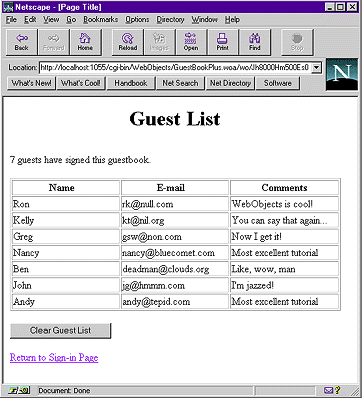

| PATH |

There are a few additional things left to do to make your application a bit more user friendly:
While developing your application, you may find it useful to be able to remove all guests from the list. (Typically, you wouldn't allow users to remove all guests from the list.)
null.
Click Add.A new
component, GuestList.wo,
has been added to the Web Components suitcase. Select GuestList.java in
the Classes suitcase. You'll notice that there is a skeleton of
the clearGuestList action
method as well as the declaration for currentGuest that
you created previously.
clearGuestList:
((Application)application()).clearGuests();
This
code calls the application's clearGuests method,
that removes all the Guest objects from the array.
GuestList.java by
choosing Save from the File menu.This creates a submit button that the user will click to clear the guest list.
value attribute
and type "Clear Guest List".This changes the title of the button. Note that the quotes are necessary to indicate that you're binding a string, not a variable.
action attribute
to clearGuestList.When
the user clicks the button, the clearGuestList action
method is called, that causes the guest list to be cleared and the
page to be redrawn.
Now you'll create a hyperlink that returns the user to the Main page.
pageName attribute,
then double-click in the Binding column and type "Main" (including
the quotes). Note: You
must specifically type the quotation marks in "Main", because
you are specifying a string representing the name of the page to
be returned. If you left off the quotes, you would be specifying
a variable or method called |
The GuestList page should now look like this:

© 2001 Apple Computer, Inc.